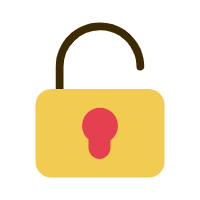

<ion-header>
  <ion-toolbar>
    <ion-buttons slot="start">
      <ion-button (click)="goBack()">
        <ion-icon slot="icon-only" name="chevron-back-outline"></ion-icon>
      </ion-button>
    </ion-buttons>
    <ion-title>
      我的
    </ion-title>
  </ion-toolbar>
</ion-header>

<ion-content color="primary-contrast">
  <ion-list class="bord_btm">
    <ion-item lines="none" routerLink="/userdetail" >
      <ion-avatar slot="start">
        <ion-img [src]="api.picurl+userinfo?.picture"></ion-img>
      </ion-avatar>
      <ion-label>
        <h3>{{userinfo?.nick}}</h3>
        <p>{{userinfo?.account}}</p>
      </ion-label>
    </ion-item>
  </ion-list>
  <ion-list class="bord_btm">
    <ion-item routerLink="/resetpwd" lines="none">
      
        <ion-label>修改密码</ion-label>
    </ion-item>
  </ion-list>
  <ion-button class="logout_btn" expand="block" (click)="goOut()">退出登录</ion-button>
</ion-content>
